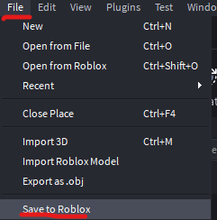
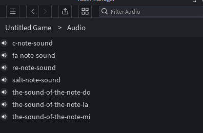
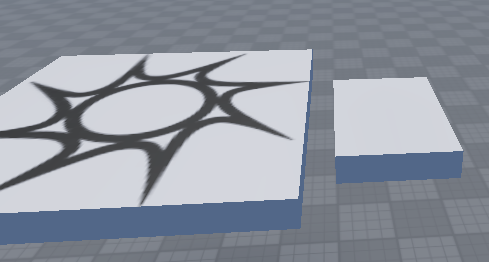
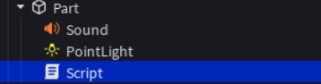
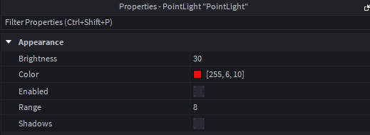
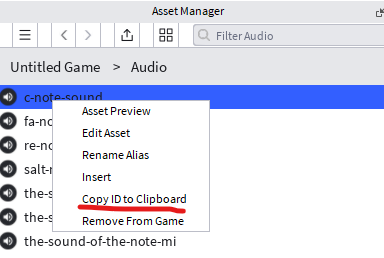
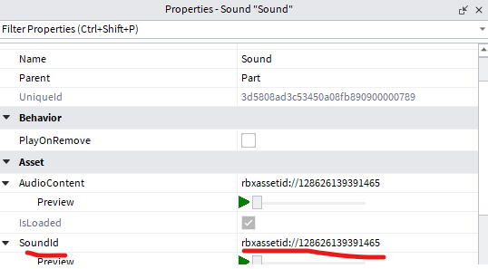
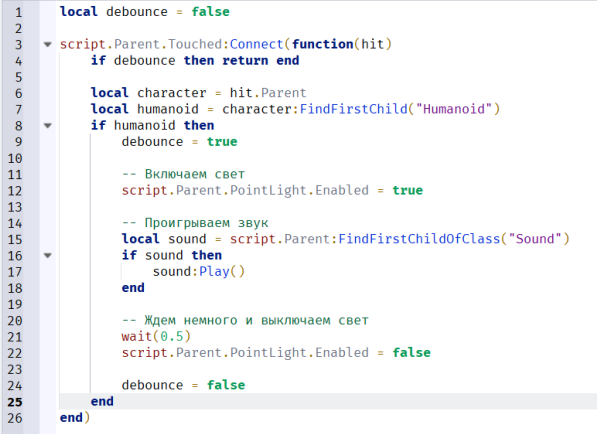

💡 На этом занятии ты:
- поймёшь, что такое
SoundиSoundId🔊 - загрузишь ноты через Asset Manager 📂
- соберёшь клавишу: Part + Sound + PointLight + Script 🎹
- продублируешь 7 нот с разными цветами 🌈
⬇️ Скачай ноты на компьютер
Сначала скачай mp3, потом загрузи их в игру (Asset Manager → Audio). Без сохранения игры на Roblox загрузка звуков не сработает.
the-sound-of-the-note-do. При загрузке в Asset Manager переименуй alias в si-note-sound, чтобы не путать с До.📚 Теория: звук в игре (Sound)
1. Что такое Sound?
Sound — объект Roblox, который проигрывает аудиофайл. Его кладут внутрь Part (или Attachment), чтобы звук «жил» в мире рядом с клавишей.
| Свойство | Зачем |
|---|---|
SoundId | ID файла: rbxassetid://… |
Volume | Громкость (0–1 и выше) |
PlaybackSpeed | Скорость / высота тона |
Looped | Зациклить звук |
:Play() | Метод «сыграть сейчас» |
2. Откуда берётся SoundId?
- Игра сохранена на Roblox (File → Save to Roblox).
- View → Asset Manager → папка Audio → Upload.
- ПКМ по звуку → Copy ID to Clipboard.
- Вставить в свойство
SoundIdу компонента Sound.
3. PointLight + Touched
PointLight — точечный свет внутри Part. В начале Enabled = false, скрипт включает его на полсекунды.
Событие Touched срабатывает при касании. Проверяем Humanoid, чтобы реагировать только на игрока. debounce не даёт звуку трещать от многократных касаний.
4. Иерархия одной клавиши
├─ Sound ← SoundId ноты
├─ PointLight ← цвет ноты, Enabled = false
└─ Script ← Touched → свет + Play()
🧠 Проверка теории
1. Куда вставляют ID ноты?
2. Зачем нужен debounce?
3. Что сделать перед загрузкой своих mp3?
🎮 Мини-пианино на странице
🛠️ Проект в Roblox Studio
💾 Фаза 1 — Сохранить игру и загрузить звуки 10 мин
- File → Save to Roblox (игра должна быть в облаке).
- Скачай 7 нот с этой страницы (блок выше).
- View → Asset Manager → папка Audio → загрузи все mp3.

File → Save to Roblox.

Asset Manager → Audio: список загруженных нот.
🎹 Фаза 2 — Первая клавиша (До) 15 мин
- Создай Part-платформу (клавишу) рядом со SpawnLocation.
- Внутрь Part добавь: Sound, PointLight, Script.
- PointLight: цвет красный, Brightness ≈ 30, Range ≈ 8, Enabled = выкл.
- В Asset Manager ПКМ по звуку До → Copy ID to Clipboard.
- Вставь ID в свойство SoundId у Sound.
- В Script вставь код ниже.

Платформа-клавиша рядом со спавном.

Part → Sound, PointLight, Script.

PointLight: красный цвет, Enabled выключен.

ПКМ → Copy ID to Clipboard.

Вставь ID в SoundId.

Скрипт клавиши: Touched → свет + звук.
local debounce = false script.Parent.Touched:Connect(function(hit) if debounce then return end local character = hit.Parent local humanoid = character:FindFirstChild("Humanoid") if humanoid then debounce = true -- Включаем свет script.Parent.PointLight.Enabled = true -- Проигрываем звук local sound = script.Parent:FindFirstChildOfClass("Sound") if sound then sound:Play() end -- Ждём и выключаем свет wait(0.5) script.Parent.PointLight.Enabled = false debounce = false end end)
🌈 Фаза 3 — Ещё 6 клавиш 20 мин
Порядок нот: До → Ре → Ми → Фа → Соль → Ля → Си
| Нота | Файл звука | Цвет PointLight |
|---|---|---|
| До | c-note-sound | Красный 255, 6, 10 |
| Ре | re-note-sound | Оранжевый |
| Ми | …-note-mi | Жёлтый |
| Фа | fa-note-sound | Зелёный |
| Соль | salt-note-sound | Голубой |
| Ля | …-note-la | Синий |
| Си | …-note-do (переименуй в si) | Фиолетовый |
- Выдели готовую клавишу → Ctrl+D (Duplicate) × 6.
- Расставь клавиши в ряд.
- У каждой поменяй SoundId на нужную ноту.
- У каждой поменяй Color у PointLight.
- Проверь Play: наступай по очереди — разные ноты и цвета.
🧯 Если не работает
| Симптом | Что проверить |
|---|---|
| Нельзя загрузить mp3 | Сделан Save to Roblox? |
| Тишина | SoundId вставлен? Volume > 0? Игра не на Mute? |
| Нет света | PointLight внутри Part? Имя точное? Enabled включается скриптом? |
| Звук трещит | debounce на месте? wait(0.5) не удалили? |
| Срабатывает от всего | Есть проверка Humanoid? |
💡 Сегодня ты:
- узнал, как работает Sound и SoundId;
- загрузил аудио через Asset Manager;
- связал Touched → свет + звук через debounce;
- собрал светящееся пианино на 7 нот.